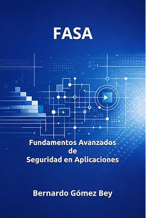

Libro · Seguridad
FASA: Fundamentos Avanzados de Seguridad en Aplicaciones
Una mirada técnica y de ingeniería a la seguridad del software.
Ver libro ↗Soy Bernardo Gómez Bey . Mi trayectoria está vinculada al desarrollo de software, la arquitectura, la seguridad y la resolución de problemas complejos. Este espacio reúne lo que escribo, publico y construyo, también más allá de la tecnología.
Escribir me permite explorar temas con tiempo y profundidad, desde la ingeniería del software hasta las finanzas personales. Aquí reúno mis libros publicados, sin limitarme a una sola disciplina.

Una mirada técnica y de ingeniería a la seguridad del software.
Ver libro ↗Una reflexión práctica sobre el dinero y las decisiones de la vida cotidiana.
Ver libro ↗Textos más desarrollados sobre ingeniería, inteligencia artificial, arquitectura y decisiones tecnológicas. Selecciono los que me interesa compartir, no necesariamente los más recientes ni los más leídos.
Sobre el valor de verificar, comprender y asumir responsabilidad cuando la generación de código se acelera.
Leer artículo ↗Una reflexión sobre requisitos, contexto y decisiones antes de empezar a desarrollar.
Leer artículo ↗Una mirada a las métricas de pruebas y a qué necesitamos comprobar para confiar en el software.
Leer artículo ↗Comentarios, observaciones y reflexiones más directas que comparto en LinkedIn. Un formato corto para plantear preguntas, abrir conversaciones y dar forma a ideas que quizá crezcan después.
Sobre las hipótesis que genera la IA y el papel imprescindible de las evidencias verificables.
Ver publicación ↗Una reflexión que relaciona experiencias como la escalada y el snowboard con la gestión del riesgo.
Ver publicación ↗Un ejemplo práctico de cómo las necesidades reales pueden pesar más que la complejidad tecnológica.
Ver publicación ↗Modelos, herramientas y experimentos que nacen del interés por resolver problemas concretos. Aquí conviven iniciativas técnicas y, con el tiempo, otros proyectos personales.
Esquema abierto para representar de forma consistente hallazgos de seguridad procedentes de distintas herramientas.
Ver repositorio ↗Aplicación para relacionar proyectos, aplicaciones, componentes de software y contextos de ejecución desde una perspectiva de seguridad. Utiliza Excel como fuente de verdad y Python para validar información, identificar inconsistencias y visualizar relaciones.
Ver repositorio ↗Una pequeña referencia a trabajos académicos de etapas anteriores, que forman parte de mi trayectoria aunque hoy mis intereses y proyectos hayan evolucionado.
Publicación científica · 2008 · Posicionamiento en interiores y lógica difusa.
Soy ingeniero informático y llevo más de dos décadas trabajando en tecnología. Mi experiencia incluye desarrollo de software, arquitectura y seguridad de aplicaciones, con interés por la inteligencia artificial y por la relación entre tecnología y negocio. Esta web es un punto de encuentro para mis trabajos, escritos y proyectos; no una lista cerrada de especialidades.